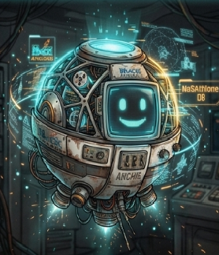

SECTOR: SOLAR SYSTEM COMMAND |
TARGET ARTIFACT: ORBITAL MAP
LEGACY BEACONS SECURED: 0 / 9

SOLAR SYSTEM HERITAGE INITIATIVE - 2150
"Greetings, Ranger. For over a century, human machines dared to explore the silent valleys of Mars, the cratered hulls of asteroids, and the dark boundaries of the outer rim. Designed for fleeting weeks, they survived for years, serving as the sole emissaries of human curiosity.
Now, rogue terraforming corporations and automated scrapper fleets are sweeping across the Solar System, about to crush these pioneers into building slag. Your mission: travel to 9 legendary NASA heritage sites, understand their historic achievements, bypass corrupted telemetry, and erect the Legacy Temporal Shields before their memory is wiped clean."